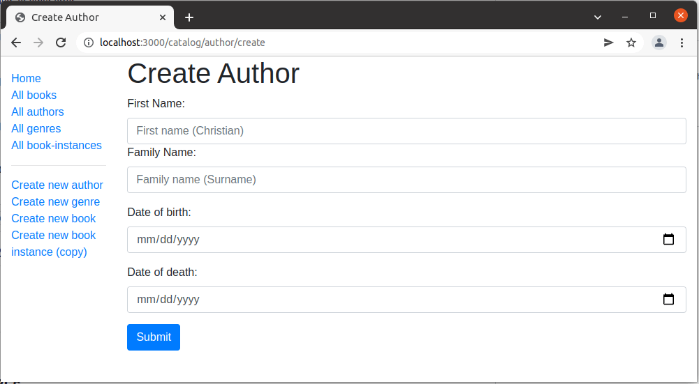

This subarticle shows how to define a page for creating Author objects.
As with the genre form, to use express-validator we have to require the functions we want to use.
Open /controllers/authorController.js, and add the following lines at the top of the file:
const { body,validationResult } = require('express-validator');
Find the exported author_create_get() controller method and replace it with the following code. This renders the author_form.pug view, passing a title variable.
// Display Author create form on GET.
exports.author_create_get = function(req, res, next) {
res.render('author_form', { title: 'Create Author'});
};
Find the exported author_create_post() controller method, and replace it with the following code.
// Handle Author create on POST.
exports.author_create_post = [
// Validate and sanitize fields.
body('first_name').trim().isLength({ min: 1 }).escape().withMessage('First name must be specified.')
.isAlphanumeric().withMessage('First name has non-alphanumeric characters.'),
body('family_name').trim().isLength({ min: 1 }).escape().withMessage('Family name must be specified.')
.isAlphanumeric().withMessage('Family name has non-alphanumeric characters.'),
body('date_of_birth', 'Invalid date of birth').optional({ checkFalsy: true }).isISO8601().toDate(),
body('date_of_death', 'Invalid date of death').optional({ checkFalsy: true }).isISO8601().toDate(),
// Process request after validation and sanitization.
(req, res, next) => {
// Extract the validation errors from a request.
const errors = validationResult(req);
if (!errors.isEmpty()) {
// There are errors. Render form again with sanitized values/errors messages.
res.render('author_form', { title: 'Create Author', author: req.body, errors: errors.array() });
return;
}
else {
// Data from form is valid.
// Create an Author object with escaped and trimmed data.
var author = new Author(
{
first_name: req.body.first_name,
family_name: req.body.family_name,
date_of_birth: req.body.date_of_birth,
date_of_death: req.body.date_of_death
});
author.save(function (err) {
if (err) { return next(err); }
// Successful - redirect to new author record.
res.redirect(author.url);
});
}
}
];
The structure and behavior of this code is almost exactly the same as for creating a Genre object. First we validate and sanitize the data. If the data is invalid then we re-display the form along with the data that was originally entered by the user and a list of error messages. If the data is valid then we save the new author record and redirect the user to the author detail page.
Note: Unlike with the Genre post handler, we don't check whether the Author object already exists before saving it. Arguably we should, though as it is now we can have multiple authors with the same name.
The validation code demonstrates several new features:
withMessage() to specify the error message to display if the previous validation method fails. This makes it very easy to provide specific error messages without lots of code duplication.
// Validate fields.
body('first_name').trim().isLength({ min: 1 }).escape().withMessage('First name must be specified.')
.isAlphanumeric().withMessage('First name has non-alphanumeric characters.'),
optional() function to run a subsequent validation only if a field has been entered (this allows us to validate optional fields). For example, below we check that the optional date of birth is an ISO8601-compliant date (the checkFalsy flag means that we'll accept either an empty string or null as an empty value).
body('date_of_birth', 'Invalid date of birth').optional({ checkFalsy: true }).isISO8601().toDate(),
toDate() (or toBoolean()) to cast these to the proper JavaScript types (as shown at the end of the validator chain above).Create /views/author_form.pug and copy in the text below.
extends layout
block content
h1=title
form(method='POST' action='')
div.form-group
label(for='first_name') First Name:
input#first_name.form-control(type='text' placeholder='First name (Christian) last' name='first_name' required='true' value=(undefined===author ? '' : author.first_name) )
label(for='family_name') Family Name:
input#family_name.form-control(type='text' placeholder='Family name (surname)' name='family_name' required='true' value=(undefined===author ? '' : author.family_name))
div.form-group
label(for='date_of_birth') Date of birth:
input#date_of_birth.form-control(type='date' name='date_of_birth' value=(undefined===author ? '' : author.date_of_birth) )
button.btn.btn-primary(type='submit') Submit
if errors
ul
for error in errors
li!= error.msg
The structure and behavior for this view is exactly the same as for the genre_form.pug template, so we won't describe it again.
Note: Some browsers don’t support the input type=“date”, so you won’t get the datepicker widget or the default dd/mm/yyyy placeholder, but will instead get an empty plain text field. One workaround is to explicitly add the attribute placeholder='dd/mm/yyyy' so that on less capable browsers you will still get information about the desired text format.
The template above is missing a field for entering the date_of_death. Create the field following the same pattern as the date of birth form group!
Run the application, open your browser to http://localhost:3000/, then select the Create new author link. If everything is set up correctly, your site should look something like the following screenshot. After you enter a value, it should be saved and you'll be taken to the author detail page.

Note: If you experiment with various input formats for the dates, you may find that the format yyyy-mm-dd misbehaves. This is because JavaScript treats date strings as including the time of 0 hours, but additionally treats date strings in that format (the ISO 8601 standard) as including the time 0 hours UTC, rather than the local time. If your time zone is west of UTC, the date display, being local, will be one day before the date you entered. This is one of several complexities (such as multi-word family names and multi-author books) that we are not addressing here.